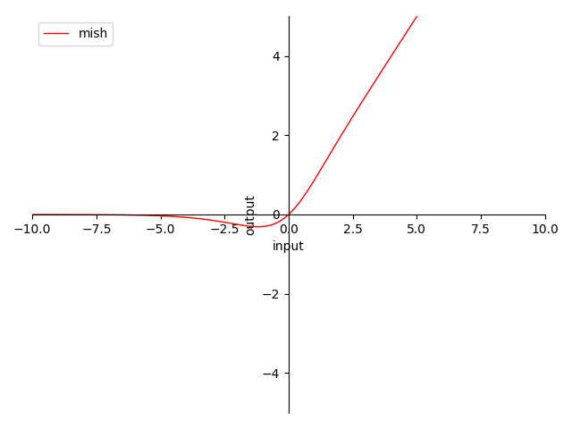

4.3.6 Mish
迭代公式：
δ(x)i=x⋅tanh(softplus(x))
即：
δ(x)i=x⋅eln(1+ex)+e−ln(1+ex)eln(1+ex)−e−ln(1+ex)=x⋅(1+ex)2+1(1+ex)2−1=x⋅2+2ex+e2x2ex+e2x=1+2ex+e2x1x
图像：

图 4.3.6-1 Mish 函数图
特性：
- 0 为中心（zero-centered）
- 输出范围在 [≈0.278, +∞) 之间，导数近似 Switch(x) 但过于复杂
- 输出值域对称，降低在正向堆积风险，但负向变化慢
- 当输入在 (0, +∞) 时，梯度 ≥0.5
- 当输入趋近 +∞ 时，近似于 ReLU，梯度趋近 1
- 当输入趋近 −∞ 时，近似于 ReLU，梯度趋近 0 ，负向过输入大存在梯度消失风险
- Mish 当 β→+∞ 时，趋近 ReLU
- 平滑不单调
Mish 是由 迪甘塔·米斯拉（Diganta Misra） 在 2019 年提出的，其目的是为了在 Swish 基础上，提供一种更有效的激活函数。就目前而言，Mish 的有效性和性价比其实一直处于讨论中 [9] 。
不过，在实验检验下 Mish 并没有那么好用 ，其各方面特性都与 Swish 高度相似。而且采用 ImageNet 数据集 + MobileNetV2 + FPN 来做物体识别，从结果上反倒没有直接用 ReLU、或者 Swish 效果好，且 MAdds 激增。
因此，本书作者不建议使用。如果既想要利用函数平滑特性来提高优化函数效率，又不想要增加太多算力消耗的话，建议可以考虑 Swish，或 h-Swish（ReLU-N）。
Mish 算子化
利用 C 语言实现对算子的封装，有：
#include <stdio.h>
#include <math.h>
double mish(double x) {
return x * tanh(log(1 + exp(x)));
}
int main() {
double x = 0.5;
double y = mish(x);
printf("The mish of %f is %f\n", x, y);
return 0;
}
运行验证可得到结果：
The mish of 0.500000 is 0.462117